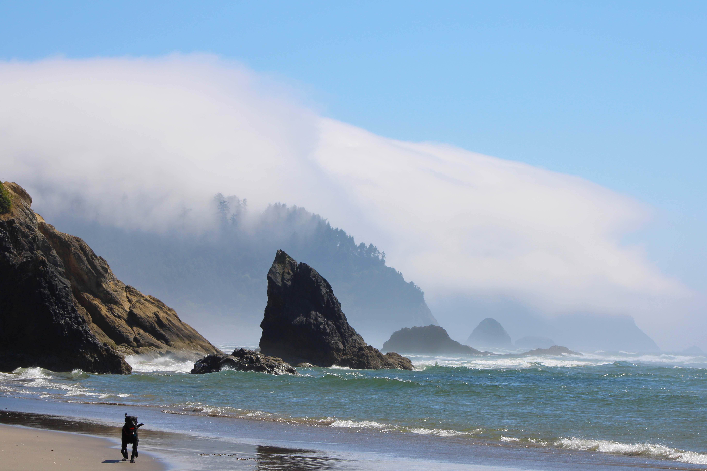
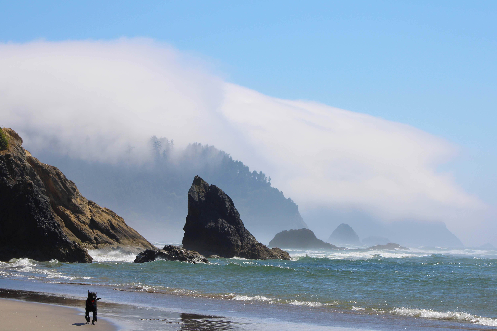
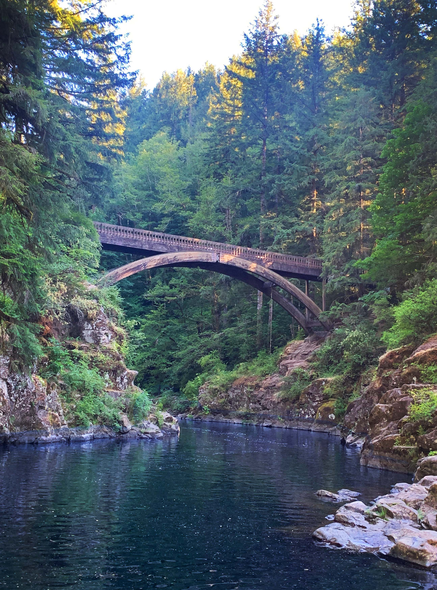
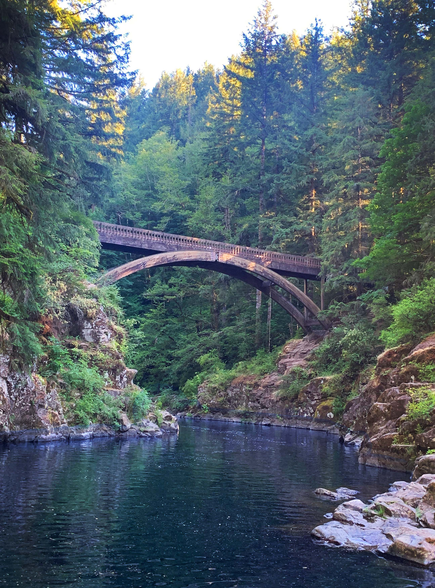

Photography

My Photography
 

.jpg) 



Video
Fact Lists
- The Rule of Thirds
- Helps compose balanced and aesthetically pleasing photos.
- Draws the viewer's attention to key elements naturally.
- Encourages creativity while maintaining structure.
- Golden Hour Lighting
- Provides soft, warm, and flattering light for subjects.
- Reduces harsh shadows and overexposed highlights.
- Enhances colors and creates a magical atmosphere in photos.
- Aperture (F-Stop) and Depth of Field
- Affects the sharpness of the subject versus the background (e.g., blurred background for portraits).
- Helps control the amount of light entering the lens.
- Adds artistic control over what is in focus.
- Shutter Speed
- Freezes motion for action shots or creates motion blur for dynamic effects.
- Affects the brightness of the photo in conjunction with ISO and aperture.
- Allows for creativity with light trails or water smoothing.
- ISO Sensitivity
- Adjusts the camera's sensitivity to light for darker or brighter environments.
- Impacts image noise and quality (higher ISO may introduce grain).
- Essential for low-light photography without a flash.
- White Balance
- Ensures accurate color representation in different lighting conditions.
- Prevents photos from looking overly warm (yellow) or cool (blue).
- Saves time in post-processing by capturing the correct tones.
- Leading Lines
- Guides the viewer's eye through the image.
- Creates depth and dimension in photos.
- Enhances storytelling by emphasizing the subject.
- Understanding Camera Modes
- Manual mode offers complete control for creativity.
- Aperture and shutter priority modes simplify adjustments for specific needs.
- Auto mode ensures quick shots in fast-paced situations.
- The Importance of Lenses
- Different focal lengths (e.g., wide-angle, telephoto) suit various styles of photography (landscapes, portraits).
- Aperture capabilities influence low-light performance and depth of field.
- Lens quality often has a greater impact than the camera body on image sharpness and clarity.
- Understanding Lighting Types
- Hard light creates strong contrasts and dramatic effects.
- Soft light is ideal for flattering portraits and natural looks.
- Mastery of artificial lighting (e.g., flash, continuous lights) expands possibilities indoors and at night.